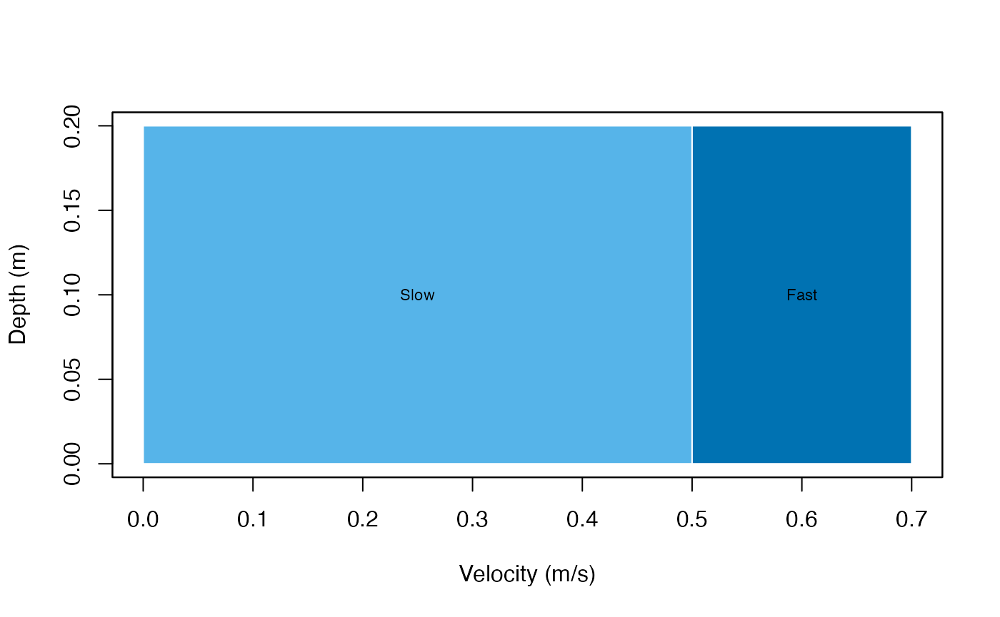
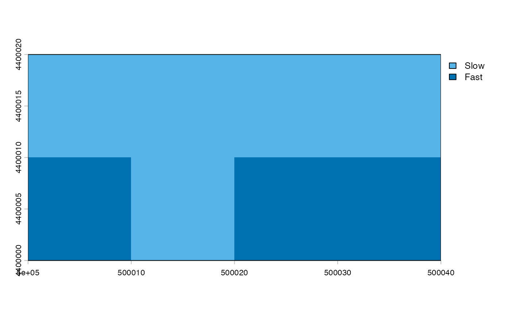

Custom mesohabitat classifications
Source:vignettes/custom-classifications.Rmd
custom-classifications.RmdCustom schemes are validated rectangular regions. Required columns
are class_id, label, depth_min,
depth_max, velocity_min, and
velocity_max.
rules <- data.frame(
class_id = c(1L, 2L), label = c("Slow", "Fast"),
depth_min = c(0, 0), depth_max = c(Inf, Inf),
velocity_min = c(0, 0.5), velocity_max = c(0.5, Inf)
)
custom <- meso_scheme(rules, name = "Two velocity classes")
validate_meso_scheme(custom)
plot_meso_scheme(custom)
Overlaps are always rejected. Gaps are rejected unless
allow_gaps = TRUE; observations in an allowed gap return
NA. Validation evaluates exact breakpoints and
representatives of every interval, not a random sample.
overlap <- rules
overlap$velocity_min[2] <- 0.4
meso_scheme(overlap)## Error:
## ! Overlapping classes 1 ('Slow') and 2 ('Fast') near depth 0 and velocity 0.4.
gap <- rules
gap$velocity_max[1] <- 0.4
gap$velocity_min[2] <- 0.6
meso_scheme(gap)## Error:
## ! Uncovered depth-velocity region near depth 0 and velocity 0.4. Set `allow_gaps = TRUE` only when gaps are intentional.
gap_scheme <- meso_scheme(gap, allow_gaps = TRUE)
classify_mesohabitat_values(1, 0.5, gap_scheme)## depth velocity mesohabitat_class mesohabitat
## 1 1 0.5 NA <NA>The custom scheme can be supplied to every table, vector, raster, and scenario classifier. Users are responsible for scientifically justifying and reporting custom thresholds and units.
h <- mesohabitat_example_rasters()
custom_raster <- classify_mesohabitat_raster(
h$depth, h$velocity, scheme = custom
)
plot_mesohabitat(custom_raster, scheme = custom)
Example raster classified with the custom two-class scheme.